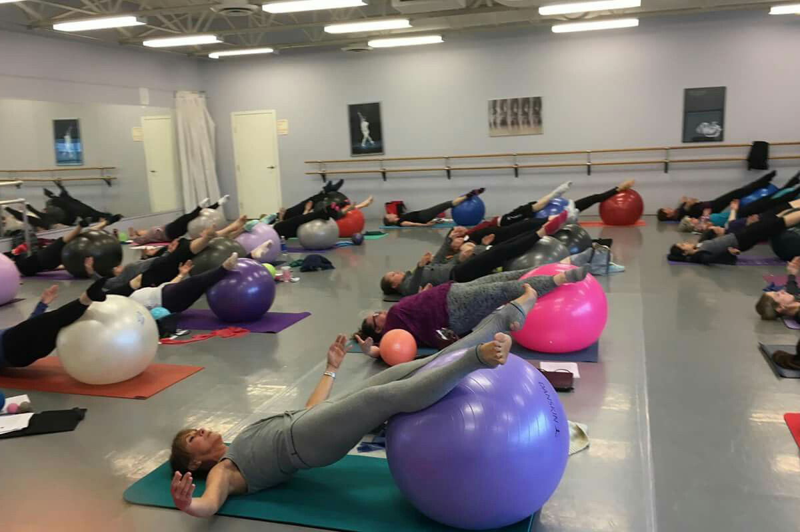
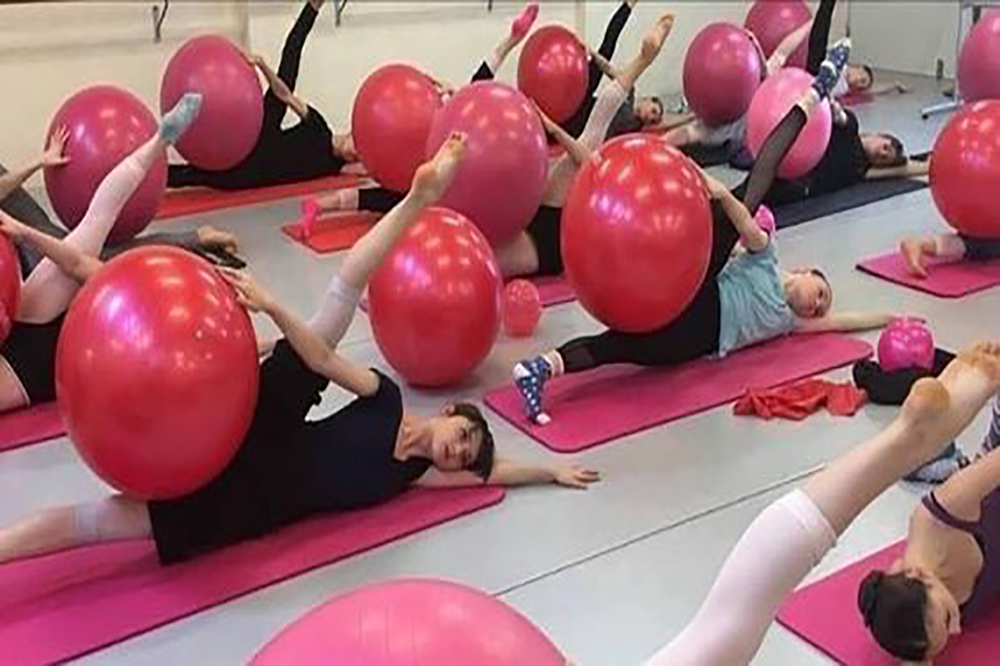

ANALIA MANUELA BUSTO
Nacida en Puerto Madryn, Provincia de Chubut, Argentina. Analía es bailarina de danza clásica y contemporánea, maestra, autodidacta y certificada en distintos niveles de PBT. Desde sus inicios tuvo inquietud por la danza, estudiando desde los 8 años, paso por diferentes maestros, hasta que se instalo en Buenos Aires. Allí estudio con el maestro Luis Baldasare, Cecilia Gezualdo, entre otros grandes amantes de la técnica clásica por biomecánica. Siguiendo este camino decidió perfeccionar sus estudios y poder ayudar y transmitir a otros alumnos, bailarines y todo tipo de publico que este interesado en trabajar el cuerpo desde la conciencia y el potencial de cada uno. Hoy la metodología del PBT es cada vez mas amplia y permite que público de todas las edades incursionen en ella.
Marie Walton-Mahon ha enseñado a muchos de los bailarines más destacados de todas partes del mundo, en especial en Australia de donde es orionda. Es maravilloso que esté compartiendo su técnica a través de este programa con el resto de la comunidad del mundo de la danza, siendo una gran herramienta tanto para docentes como para bailarines. Es una gran inspiración y formadora de profesionales.
Con décadas de experiencia trabajando con bailarines desde principiantes hasta profesionales, la Sra. Marie Walton-Mahon ha formado a innumerables bailarines profesionales en todo el mundo. El programa de la Sra. Walton-Mahon proporciona a los estudiantes un profundo conocimiento y comprensión de la anatomía del cuerpo, la fuerza central y la técnica. A través de sus cuidadosos y creativos métodos de enseñanza, me proporcionó una valiosa educación en danza y la fuerte base necesaria para tener éxito en una industria con tanta competencia. Este programa es crucial para cualquier bailarín que quiera llevar su baile al siguiente nivel. Altamente recomiendo la Técnica de Ballet Progresivo (PBT).
